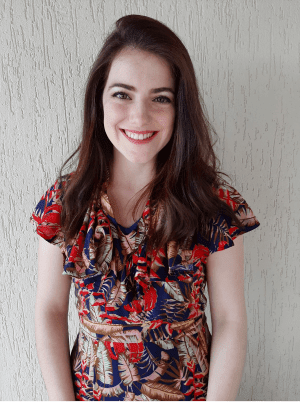

About me
My name is Mariana Lopes, but I like to be called by my nickname Mari... if you ever call me Mariana, I'll assume you are angry at me! I live in Juiz de Fora and I'm 25 years old. I'm engaged and we plan to marry this year :D I'm a member of the Church of Jesus Christ since I was born, and I served a mission in São Paulo, Brazil.
I'm studying Applied Technology at BYUI, I like to program and I work with this. The thing I love most about BYUI is the flexibility to study and how I have learned so much from the classes I take. Before starting to study at BYUI I thought that studying online was easy and I wouldn't really learn the things, but I was so wrong. I love how the assignments and really make me work and learn.
My favorite color is blue, if could't alreayd tell by my home page background 
What is your favorite color?
Schedule
My schedule is usually like this:
| Course | Course Description | Section | Class Time | Location |
|---|---|---|---|---|
| CS 213 - Web Engineering I | Understand and learn web technologies and the client-side web development | Section 4 | 9-12 Hours | Online |
| WDD 130 - Web Fundamentals | Learn basics Web technology, Web design and development principles | Section 12 | 6-8 Hours | Online |
| CS 246 - Software Design and Development | Develops the knowledge of object-oriented programming, with the correct syntax and semantics in Java | Section 3 | 9-12 Hours | Online |
| REL 200C - The Eternal Family | The course is based on The Family: A Proclamation to the World, it's objective is to study the principles in the proclamation and support the doctrines for a happy marriage and family life. | Section 91 | 6-8 Hours | Online |
Favorite quote
"Come what may, and love it" - Elder Joseph B. Wirthlin